Thank you for purchasing my theme. If you have any questions that are beyond the scope of this help file, please feel free to contact me via Profile page. Thanks so much!
In Pages section create new page called 'Home' and use for it Homepage template,
Important!
If you want to use Homepage with classic header use 'Homepage Scroll + Classic Header' template,
If you want to use Homepage without scroll effect use 'Homepage - No Scroll' template and use only 'Main Menu' location (in Menus section),
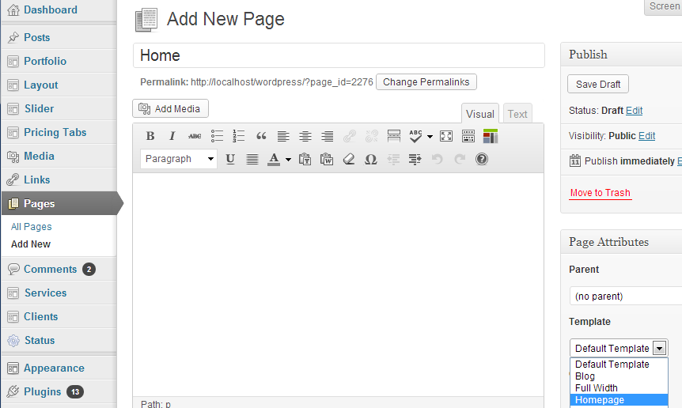
Go into Settings > Reading and set created Home page as Static page - Front page,
Note: If you want to create 'Blog' page create empty page (Default template) - name it Blog and in Settings > Reading set this page as Post page
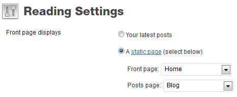
Main Slider setup:
In Scroller admin panel, in Layout section choose type of slider
1. Slider with caption displays (as caption) only text entered into slide content,
2. Slider with content displays content as it is
Create new Slider post (custom post) with title, add sometext and set featured image for this post,
If in Admin panel is selected Slider with content you can style inserted text - use native wp tools to set custom color, align text, add h1 - h4 headings etc.
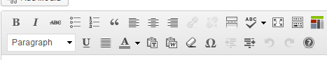
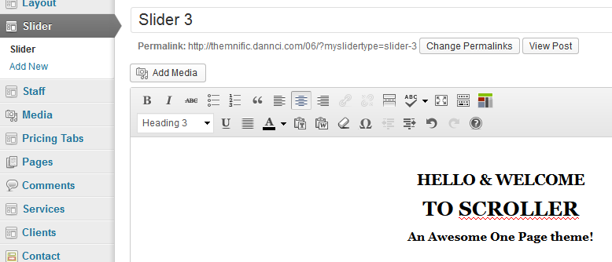
Layout sections
Create new Layout post (homepage section) with 'Featured Works' title,
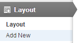
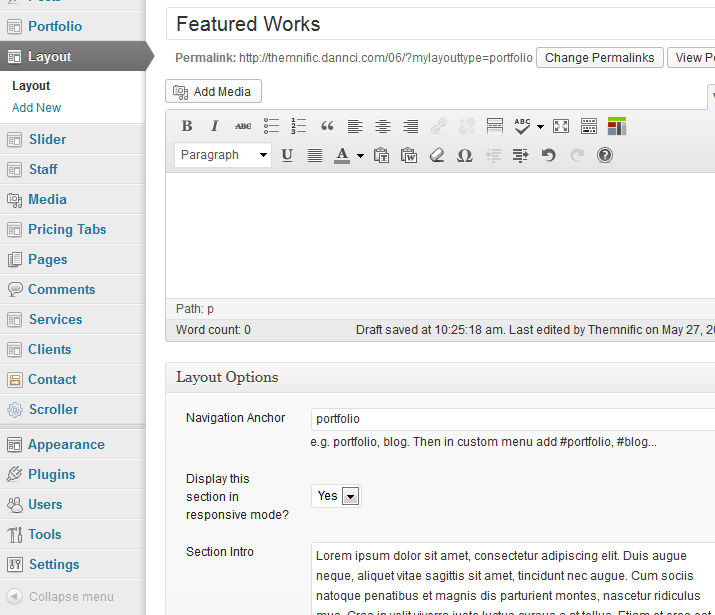
In 'Layout Options' tab enter unique 'Navigation Anchor' 'Navigation Anchor' fields are important for scroll menu. For this section we add 'portfolio' anchor
In 'Layout Options' select if section will be shown on small (mobile) screens.
In 'Layout Options' can be inserted aditional info - Section Intro - will be shown as text next to section title.
NOTE! If Section Intro field stays empty layout (section) title will be hidden. And you can add any content...
Homepage Content & Shortcodes
If you set featured image for layout section, this image will be as background (parallax effect). Use big images eg. 1920x1080px.
Into Layout section content can be added headings, texts, button, icons... and these elements can be styled using native wp tools (similar to content in slider)
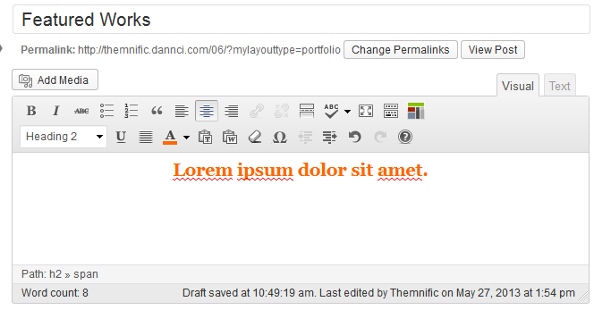
Into Layout content can be inserted Layout shortcodes
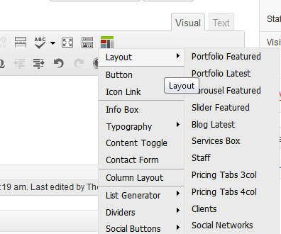
Before this needs to be created custom posts:
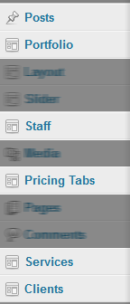
Portfolio Latest/Featured, Carousel Featured and Slider Featured shortcodes displays Portfolio posts,
NOTE: for featured shortcodes can be inserted more categories (Categories names should all be in lowercase and separated by commas)
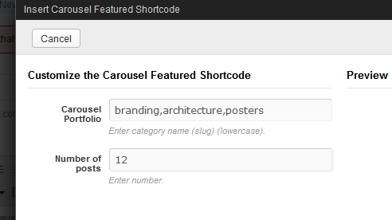
You need to create menu item for every Layout section. It is because of scroll effect.
Go to Appearance > Menus and create 'Scroll menu'
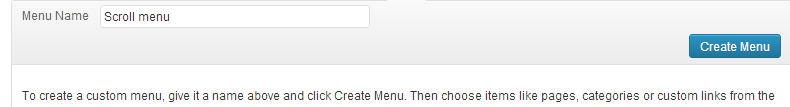
select this menu for 'Scroll Menu' location and save it!
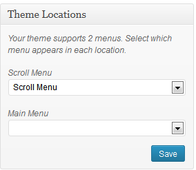
Now using 'Custom Link' feature add new menu item with 'Portfolio' label and '#portfolio' link
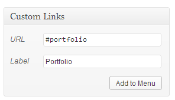
Important ! For every layout section add New menu item! Use unique word from 'Navigation Anchor' field (see Layout sections (step 2)), and create menu item with '#+unique word' link
So if I create Services and Portfolio sections I will add these menu items:
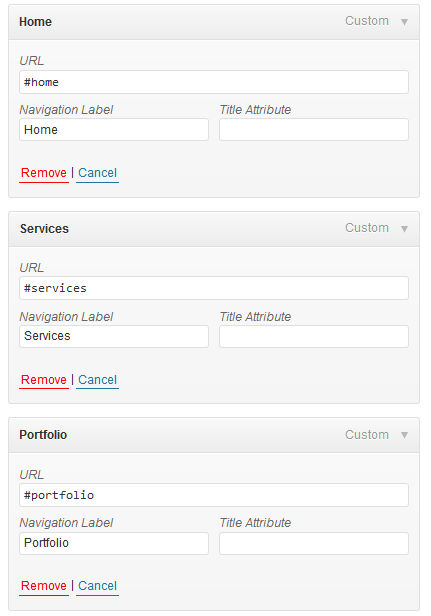
Do not forget to create Home link (with #home) to scroll to the top.
Add external link to scrolling menu:
In Screen Options (top dropdown menu) enable CSS classes
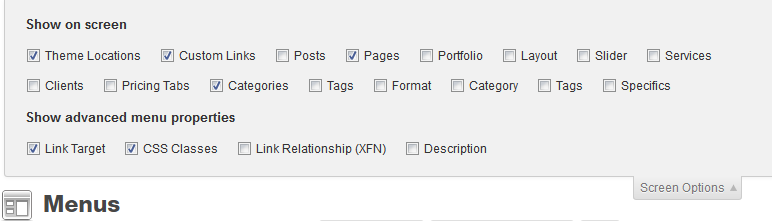
And now add your external link with 'external' word in CSS classes field
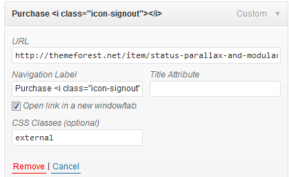
Check 'Video' post in the Format tab and enter video embed code (iframe) into Video field:
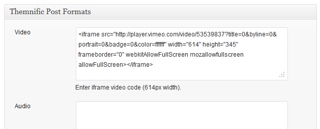
Audio post
Check 'Audio' post in the Format tab and enter audio embed code (iframe) into Audio field:
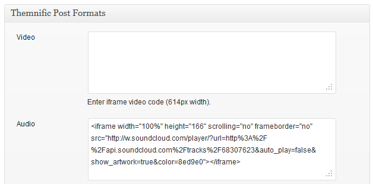
Gallery post
Check 'Gallery' post in the Format tab and enter more than one image into post gallery (see: images section)
The sideshow will be created automatically.
Image post
Check 'Image' post in the Format tab and set featured image.
Quote post
Check 'Quote' post in the Format tab and add some content.
Post content = Quote.
Post title = Author of the quote.
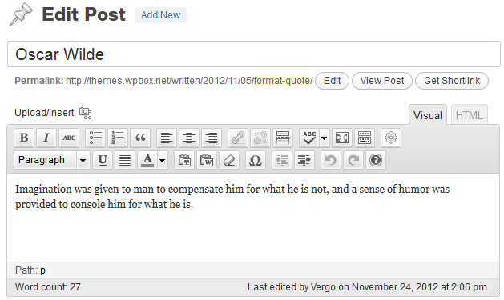
Link post
Check 'Link' post in the Format tab and ads URL into Link field.
Install it and in this software translate vergo.po file (line by line) screens,
Once you have translated all the strings, you can save this as your .po file.
The filename of your .po is crucial. Gettext uses the ISO 639 standard for language abbreviations and ISO 3166 for locales. If your translation is written in American English for example, your file name will look like en-US.po. Capitalization is also important here. For a full list of language and country codes, check out these two links:
Once you save, POEdit by default automatically creates a .mo file alongside your .po file. Put these files into 'lang' folder.
Access your wp-config.php file found in your WordPress' root folder. Your file should already contain define('WPLANG', ''); but if it does not, you can add it in. You simply need to add your language and locale code into the define. If you were to translate your theme into German, you would have this:
define('WPLANG', 'de_DE');
Your internationalization is complete!
Once again, thank you so much for purchasing this theme.